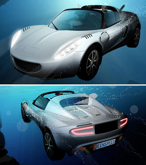

Submarino descapotable
 De: La Frikipedia, la enciclopedia extremadamente seria.
De: La Frikipedia, la enciclopedia extremadamente seria.
| De la serie vehículos de ayer y de hoy:
|
| Submarino Descapotable
|
|
|
| Marca
|
Hasefroch
|
| Modelo
|
Todavía es beta
|
| Antigüedad
|
No
|
| Velocidad
|
333 Km/h
|
| Precio
|
100.000 Reales Falsos.
|
| Mano
|
No, es automático
|
| Combustible que usa
|
Galosina de 69 octanos
|
| Colores
|
..para gustos
|
| Tipo
|
Es un buen tipo
|
| Plazas
|
5
|
| ¿Se puede tunear?
|
No, viene tuneao de serie
|
| Notas
|
Puede bucear
|
«Ya sé cómo funciona esto: puede ir arriba y abajo pero no hacia los lados ni atrás en el tiempo»
~ Homer al entender cómo funciona un...¡espera! ¿¿de que estoy hablando??
«Estamos inventando el submarino descapotable, y va a ser la salvación de nuestros astilleros, el arma del siglo XXI, el punto fuerte del programa de defensa de todos los que han perdido el sentido del ridículo.»
~ Un inútil sobre el submarino descapotable
Como estáis imaginando, el submarino descapotable es el invento del siglo. Lo inventó Hasecorp en un intento desesperado por dominar el mundo, tras plagiarle la idea a Yamcha que, oyendo la famosa frase (Tienes menos futuro que un submarino descapotable™) decidió hacerlo realidad, para hacerle quedar mal a Paco.
De momento no ha tenido mucho éxito, esto es debido a que la gente no sabe todas sus funcionalidades.
Pero pasemos ha estudiar la frase, de donde surge la idea de este gran invento.
Tienes menos futuro que un submarino descapotable™

La cara de Yamcha despues de enterarse que le habían robado el prototipo
Frase tipica de chiquito de la calzada hablando con bill gates.
Historia
Esta expresión tan conocida por todo el mundo, surgió a raíz de una burla del capitán aspañol a la invasión de los moros durante La Guerra Olvidada:
- Mohammed V: لكأالله أكب
- Paco: ¡Ja, ja! XD
- Mohammed V: أالل هكك ببلكأا
- Paco: Tienes menos futuro que...un submarino descapotable!
- Ejército aspañol: ¡Jajajajaja!!
Variantes
- Tienes menos futuro que una peluquería de calvos
- Gñá gfhsqwerty achtungpoiuy asdf
- Pareces Any Key!!
- Tienes menos futuro que el asesino de Chuck
- ¿Por qué no te callas?
Submarino descapotable (vehículo)
Este submarino consiste en dos motos y un techo (ah, no, que es descapotable) que han sido adaptados para el navegamiento por debajo de las aguas. Consta de 3 partes: la carrocería y el motor.
Características técnicas
- Motor
- Potencia: mucha mucha (no es facil acelerar bajo el aguas)
- Nº de cilindros: 6, en forma de W
- Acceleración (0-100;0-200): En 0' ; 2 segundos
- Velocidad máxima: 333 Km/h
- Combustible: Una mezcla de Tungsteno y Alcohol
- Carrocería
- La forma: Si que la forma si...
- Colores disponibles: Verde pistacho, rojo cacahuete y amarillo limón.
- Capotabilidad: Descapotable
- Material usado en la fabricación: Sustancia sustanciosa
- Nº de plazas: 5
- Tipo de carrocería: En forma de cohe, aunque es un Tetorreno
- Año de fabricación: anteayer mientras me aburria?
- Fecha de caducación: Antes de (ver tapa)
- Nota del fabricante:
Consérvese en un lugar fresco y frío
- Cómo conducirlo: Como probablemente no tienes branquias y no puedes respirar bajo el agua, debes saber que debes llevar en el vehículo una bombona de oxígeno y una escafandra
y si eres de Bilbao, puedes aguantar la respiración durante todo el viaje. Aparte de esto, se conduce como un coche normal, salvo por la palanca de verticalidad, que se pone para ir hacia arriba o hacia abajo.
Historia
Desde siempre se ha intentado obtener un submarino descapotable, sobre todo, después de La Guerra Olvidada; después de esta guerra se hizo tan popular la expresión Tienes menos futuro que un submarino descapotable™ que Yamcha decidió acabar con ella inventando el submarino descapotable, pero Hasecorp le robó el invento y lo mantuvo en secreto hasta hace unos meses, cuando lo lanzó al mercado.
Ventajas
 Aquí podemos ver el prototipo creado por Yamcha
- Sólo tienes que comprarte un submarino descapotable para poseer submarino y coche.
- Puedes ir a Ibiza en coche.
- Cuando vas a la playa, puedes aparcar en el fondo del mar.
- Puedes fardar mucho.
- Te recuerdo que es descapotable??
- Con el mismo vehículo tienes: 1 submarino descapotable, 1 Coche descapotable o 2 Motos.
- Serás el primer poseedor de uno de ellos.
- Chuck norris tiene uno igual.
- Seguro que no pillas un atasco, anoser que sea sábado, que los peces se van de fiesta.
Desventajas
- No puedes irte con tus amigos por el mar, ya que ellos no poseen un submarino descapotable.
- Si te encuentras con un pez espada, te puede pinchar la rueda.
- Se te moja la ropa
- ...y el mapa
- ...y el pelo
- ...y la radio
- ...y el asiento
- ...
y el techo
- ...y los
condones papeles que llevas en el coche
- Si lo usas como submarino militar, te pueden entrar los torpedos por el techo.
- No puede volar,
todavia...mwhaha
- Si haces un viaje largo y te quedas sin galosina...cagada del 15!
- Te quitan puntos por pegarle por detrás a una medusa,
maricón
¿Sabías que...
- ...contrariamente a lo que muchos piensan, si que se puede obtener un coche a partir de un submarino descapotable?
- ...contrariamente a lo que muchos piensan, partiendo un submarino descapotable por la mitad SI que se consiguen dos motos?
- ...tienes menos futuro que un submarino descapotable™?
- ...va a ser la salvación de nuestros astilleros, el arma del siglo XXI, el punto fuerte del programa de defensa de todos los que han perdido el sentido del ridículo?
Ver también
 Transporte Transporte 
|
|
|
Autor(es):
- Epikurolibre
- ElInventor
- NRikee
- Veni Vidi Vici
- Dark temptation
- Pichy
- Ricardoxxxlo
- Roms.
- Jcastb
- Gñapero Solitario
Frikipedia 2005-2016, Licencia
GFDL 1.2 - Extraído por FrikiLeaks